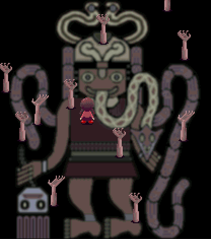

雪は踊っている
昔購読していたサンレコは大学4年で購読を辞めて以来久しく買っていなかったが，「エレクトロニカアーカイブス」なるものが出ていることを知り購入した．
小学校 5 年くらいに買い与えられた DS で聴いたポケモン DP の『戦闘！みずうみのポケモン』に衝撃を受けたあたりから電子音楽に精神を支配され始めた． ポケモンは BW から未プレイだしポケモンの名前も覚えていないが，サントラは継続して買っている． XY はエフェクトを効果的に使えるようになり，さらに幅が広がったと思う． ポケモンの戦闘 BGM は長音が多いが，リバーブやエコーが使えるようになったことで，何倍もきらびやかになっている． 一之瀬の編曲力は DP から既に卓越しており，増田の作曲を何倍にも増幅してくれる． 増田は音楽理論を全く無視した曲を作るが，一之瀬は一方で音楽の土台があるので，増田のメロディを形にするのが上手なんだと思う． ビートルズみたいだね．
また，一之瀬の曲を聴くと分かるが，プログレ色が多い． つまり曲の中でテンポや雰囲気，拍子，主要テーマを変えることを厭わない（戦闘！フロンティアブレーン BGM，PWT決勝戦!） これはループする戦闘 BGM という文脈において強みになり得ると思う． あとは中だるみがあるところも特徴的だと思う． BGM の中で明らかにキメているところと，なんかクネクネした展開のところがあり，曲の中で雰囲気を統一しないのも特徴になりえる． また，一之瀬の曲に共通する手癖は IV–V–iii–vi とそれに類する進行だと言われている． まあ行ってしまえば小悪魔進行ではあるのだが，逆に言えばありふれたこの進行を一之瀬の音と聞き分けさせるほど強烈な個性をもって編曲しているといえる．
また，ポケモンの BGM で特徴的なのはその音色だと思う． 特に DPP はホルンやストリングの音がかなり安っぽいのだが，その安ぽっさにより，ホルンやストリングスとはまた別の楽器として成立している． BW のシンバルも特徴的だと思う．リリースが妙に弱く，金属感があり，音階が強い． この特徴は世代が進むごとにだんだん失われつつある． SM なんかはかなりリアルな音，解像度の高い音を使用しているが，個人的に特徴的な音色の方がポケモンという異色な空間の表現としては向いていると思う． グラフィックの面でも同じことがいえるとは思うけど．
全然関係ないが SM では toby が作曲に加わっている． 個人的には toby の音は undertale のときのように midi 音源に近い音だったからこそミニマルに思想が伝わる曲になっていたと思うし，toby の曲は必ずしも展開が多いわけではないので，ポケモンの曲には向いていないのではないかと思っている． テラレイドはよかった． toby の作曲センスがうかがえる．
キリがないので自分のポケモン BGM ベスト3 を記載して終わります
殿堂入り：栄光の部屋
あまりにポケモンの BGM を聞いているものだから，父親から DTM を勧められた． DAW という言葉も知らないし，そもそもパソコンも使ったことが無かったので，最初は親の PC を借りて苦労しながら Domino で遊んでいた． とはいえオリジナル曲は作ったことがなく，ポケモンの BGM をずっと耳コピしていた． Domino から midi に出力すると正しく音が出力されなくてキレていた記憶がある． この二人の動画をずっと見ていた．
結構な数耳コピしたが，一番出来が良いと思うのは以下． ティンパニの音とか雑だしストリングスのアタックが遅い特性も考えていないので全体的に品質は低いが当時にしてはよくできているなと思う．
ずっと耳コピをしていたので今度はちゃんと音楽も聴くように叱責された． じゃあなんかエレクトロ教えてくれよと言ったところ，SCSI-9 と YMO を教えてくれた．
SCSI-9 はロシアのユニットで，おそらくハウスだと思う．
Eclair de moon が一番有名だと思うが，何より音色が良い．
ちなみこれは聴けば分かる通り（というかタイトル通り）ドビュッシーの『月の光』をサンプリングしている．
自分が生涯一番聴いた曲を挙げろと言われたら多分これになると思う．
人生で最初にアルバムを買ったのも SCIS-9 だった．
これを買った：Metamorphosis
当時は apple music など無く，アルバムも一枚 2-3000円とかで中学生にとっては高かったので賭けだったが，SCIS-9 のアルバムはどれも外れがなかった．
SCSI-9 は曲に感性と意志がこもっていることが素晴らしい． Aphex twin が好きではない理由の一つだが，エレクトロニカ，特にハウスは音色や展開が似ているため，雑にたくさん作れてしまうことが多い． 作った人間が想像している物語や考えが無い曲に価値を感じることができない． 難しいことを考える必要はなく，明確なゴールを持てればいい． 音楽に明確なルールや決まりはないけれど，良い音楽とはそういうものだと考えている． 一方で，SCIS-9 の曲は自由闊達でのびのびとした音・展開・世界観がある． 最も分かりやすいのはこれ：My Sunday Zoo．
ちなみにドビュッシーの『月の光』はヴェルレーヌの詩をもとにしているという説は有名な話である． ベルガマスク組曲の中でも最も人気が高いが，その特筆すべきところは，「印象派」に名付けられるように，人間の心象を素晴らしく表現したピアノだと思う． ピアノのように伴奏もメロディも和音も奏でることができる楽器を最大限生かして表現の幅を広げたところは，画家のしぐさにも通じる部分がある． ちなみにヴェルレーヌの『月の光』はワトーの『雅宴画』がもとになっているという． つまり，ドビュッシーの『月の光』を感じるためには，『雅宴画』からさかのぼる必要がある．
例えば『シテール島への巡礼』や『ヴェネツィアの祝宴』を見てみる． 彼らは貴族で上流階級だが，どことなく影がある． きらびやかで華やかな世界に浸っている自分という仮面をつけ，相手との恋愛，自分の人生の成功を歌っているが， 実際の成功は簡単なものではなく，心から信じることができない． そうした心境から，ひそかに悲しむが，そうした中でも唯一嘘偽りがない自然の美しさに感動する． といった感じに，いかにも悲劇のヒロインぶった上流階級しぐさで非常に鼻につくわけであるが， まあ上流階級のそういう独りよがりな心境は無視しても，人の心を表した一連の絵であることは分かる． この絵を詩に変えたのがヴェルレーヌであり，その詩を歌にしたのがドビュッシーである．
では，次に浮かび上がる疑問としては，『月の光』をサンプリングした曲の中でもっともよいのは何かということになる．
冨田勲だと思う． 『月の光』は，人間の心情をシームレスに表現するところにある． この表現を電子音で表現するという試みは挑戦的だが，音色から特にエフェクトが素晴らしい働きをしていると思う． 単純に考えればピアノよりも手札が多いはずなのであたりまえではあるのだが，技術におぼれず，『月の光』を解釈するという目的にブレていない作品だと思う． 例えば最初のシンセは左→右→中央とパンを振っているが，これは波打つ水面に浮かぶ月をあらわしていると分かる． 最初は暗く，情景を表すのみだが，そこにピッチを上にずらしたシンセが乗ると仮面の華美を感じさせる． 次第に盛り上がり，だんだんと増す不安，人生への悲しみを感じたところでふと音が減る． ここは周囲の静かな自然，森や生きもの，月の存在を見つけたところだと思う． 次第に自然への感動が浮かび上がり，最初にでてきたピッチを上にずらしたシンセが再度登場する． 前回とは違い，ピッチがかなり上まで上がる． 最後は限界までピッチを上げ，大団円で終わる． 宇宙から見た月という意見もあり，それも楽しい解釈だと思うが，自分はこのように読んだ． 当時のシンセの普及率（シンセが普及するという概念すらない．）を考えると，この作品を出したことに対して畏怖すら感じる．
逆にヨコタススムは微妙だと思う． ただ，これは彼自身も明言している通り，『月の光』を目的にしているわけではなく，CM の音楽としての『月の光』を採用したいのだという． そういった意味だとあのパッチワークもうなずける．
人生で2番目によく聞いた曲は YMO のキューだろう． YMO の傑作は『TECHNODELIC』でも構わないが，やはり『BGM』だと思う． 『Solid State Survivor』で湧き出てきたにわかファンを選定したいといういかにも選民的な，上級国民しぐさでできたアルバムではあるけれども， 良い音を作りたい，という思いが根底に見える． また，高橋幸宏が大きいと思うが，ヨーロッパ系の影響がある． JAPAN が代表的だと思うが，当時のヨーロッパのエレクトロは YMO の影響をうけて耽美なサウンドを具現化している． YMO がこれを見逃すはずもなく，『BGM』ではより内省的なサウンドへ進化したのだと思う． 各曲は整合していないが，これは坂本が細野に反抗していることも影響としてあると思う． 特に『千のナイフ』に対して，「千のナイフっぽい曲を作ってくれ」という細野のリクエストに対して「なら千のナイフでいいじゃないか」と返したことは有名． また，高橋幸宏もかなり尖っているというか陰鬱である． 『サラヴァ！』の印象しかなかったため初めは驚いた． 『音楽殺人』を聴けば納得してたかもしれない． 印象的なのは『バレエ』だと思う． ボーカルの定位がおかしい．しいて言うなら真ん中にいるが，全体に響いている． ハーモナイザーでダブリングしたのちにディレイで左右に広げているらしい． 『マス』も細野の名曲として名高い．
中学では音楽の話をしたクラスメイトが一人だけいた． 身バレだが，日本人なのに名前の読みが「エリク」だったので「エリッククラプトン好きなの？」と話しかけたところからコミュニケーションが始まった． 彼はロックに詳しく，レッド・ツェッペリンとかジミヘンを教えてくれた． 自分はエレクトロニカを知っていたので aphex twin とか board of canada とかを教えて互いに情報交換をしていた． ちなみに自分の親もロックが好きなので，その話をすると親からも doors とか little feet を教えられて，なんだかんだロック漬けだったなと思い出す．
ボカロに傾倒するのもこのころで，脳漿炸裂ガールやロストワンの号哭を経てハチや n-buna を聴き始めるというようなスムーズな運びだった． ここでいう 2012 年ごろから聴き始めた． 妄想感傷代償連盟って 9 年前なのか…たすけてください…
このころは創作を馬鹿にしない気概があったというか，自分の好きなものを好きなように作ってそれで成立していたのが良いなと思った．
アンビエント，ポストクラシカルの世界を知り始めたのもこのころだと記憶している． きっかけはゆめにっきで，当時はストーリも何も理解していなかったが，ききやま氏が書かんとしている世界と音楽と絵に没頭した． 窓付き当人でないとこの解像度で話を作れないのではないだろうか
↓ 窓付きが義理の母親から咎められていることを表現した絵．この絵が一番芯を食っていて，恐ろしい．

アンビエントはやはり日本だと思いたい． 出自はブライアンイーノであるけれど，吉村弘や池田亮司，もちろん坂本龍一や細野晴臣のおかげで，『環境音楽』ではなく『音楽』に発展したと信じている． 『来るべきもの』なんかも捉え方によってはアンビエントではないだろうか
高校くらいで色々無理になり，自分でも音楽を作り始めた．
Cubase など有償 DAW の存在は知っていたが，相変わらず Domino で作っていた．
金がないため．
SCIS-9 のような曲を目指していたものの当然聴くに堪えない曲ばかりだった．
今聴いてもやりたいことが分かるので根底の発想は今も同じなんだなと思った．
どういうルートか忘れたが，このころ音大を目指している友達ができた． 当時の自分は冨田勲の影響でドビュッシーの『月の光』だけをよく聴いていたので印象派関連で初心者向けに他のドビュッシーや，サティを教えてもらった記憶がある． ジャズも教えてもらったがあまり覚えていない．
大学になったあたりで DTM サークルに入った． 『テクノ好き大歓迎！』みたいな感じだったので軽い気持ちで入った． skrillex や zedd といった EDM やダブステップは全く聞いたことがなかったが当時のこのサークルは EDM が流行っていたので聴くようになった． 激しいだけの音は好きではないのであまりハマっていないが，skrillex は今でもたまに聞く． 『YOU THINK UR ANDY WARHOL BUT YOU ARE NOT』みたいなアルバムは感動した． ずっとドロップみたいなメガミックスなのだが，このような曲は巨視的な感覚を保ちつつミクロなミックス・編曲が必要になると思う． 他の曲はよく知らない． 教えてください
cubase を買ったのもこのころだった． 鏡音リンレンを買って投稿していた． 同時期に Vtuber にハマり，楽曲提供をしていた． いわゆる黒歴史だけどいい経験をさせてもらった：供養
創作は何を目的にしているのかを考えることが多かったと同時に，自分が良いと思う曲と自分のコンポーザーとしての能力には激しい隔たりがあることを実感した． 苦しいけれど，サラリーマンとしての道に進めてよかったと思う．
美術や芸術に対する視点は，このころから一貫して「自分の価値観を定めること」で変わっていない． つまりその絵，音楽，本，演劇を見たときに自分がどう反応してどう考えるか，のサンプルを収集することで自分の価値観を真に捉えることができる，と思っている． ただ，これは創作を消費するという立場では一生達成し得ない． 消費して感想を述べる行為は価値観の材料にならないから． ただ，吸収したからといって達成できるからというとそうでもない． 創作者が生成したものの粒度でしか自分の価値観を判定できないから． そうすると，結局自分が創作するのが一番早いのだと思う． 別に自分が作る必要がないのは当然というか，創作は誰かのためにやるものではない． 投稿することを恥ずかしがる必要もない．恥ずかしいのであれば自分の価値観がまだ成熟していない（イマココ）．
今はめっきり創作をやめてしまった． が，この前パソコン音楽クラブの tenk(e)i を聴いてまた始めようかなと思い始めた． 漫画を描こうと思っている． ゆめにっきの呪縛から逃れられていないので．